矩阵乘法（GEMM）几乎占据了现代大模型训练与推理的全部 FLOPs。NVIDIA 官方的 cuBLAS 库把它优化到了接近硬件峰值，但很少有人真正从零写过一遍。
这篇 worklog 作者 Sibo 用 CUDA 从最朴素的 naive kernel 起步，一步步叠优化，最终在 A100 上把 SGEMM 做到了 cuBLAS 性能的 94%。这不是要造一个 cuBLAS 替代品，而是借一次完整的迭代，把 GPU 最关键的性能特征：全局内存合并、共享内存缓存、占用率、算术强度，全部吃透。
矩阵乘法可能是当今最重要的算法。考虑到它在大型深度学习模型的训练和推理过程中几乎贡献了所有的浮点运算量，把它从头写好是一件值得的事。
作者的目标不是造一个 cuBLAS 替代品，而是深刻理解现代深度学习所用 GPU 最重要的性能特征：全局内存访问合并（coalescing）、共享内存缓存（shared memory caching）、占用率（occupancy）优化等等。
他会从一个朴素 kernel 起步，逐步应用优化，直到在「运气好的一天」达到 cuBLAS（NVIDIA 官方矩阵库）性能的 95% 以内。这里说的是 FP32 下的 cuBLAS；如果用 TF32 或 BF16 精度，cuBLAS 可以动用 tensor core，FLOPs 再翻 2.5 倍到 3.5 倍。
在 CUDA 编程模型中，计算被组织成三级层次结构。每次调用一个 CUDA kernel 会创建一个新的 grid，grid 由多个 block 组成，每个 block 最多包含 1024 个独立线程。处于同一 block 的线程可以访问同一块共享内存区（SMEM）。
线程数量由 blockDim 变量配置，它是一个包含三个 int 的向量，分别对应 blockDim.x、blockDim.y、blockDim.z，如下图所示。
类似地，grid 中 block 的数量由 gridDim 变量配置。当从 host（CPU）启动一个新 kernel 时，会创建一个包含指定 block 和线程的单一 grid。
在第一个 kernel 里，我们用 grid/block/thread 的层次结构，给每个线程分配结果矩阵 C 中一个唯一的位置。该线程随后计算 A 的对应行与 B 的对应列的点积，并写回 C。由于 C 的每个位置只被一个线程写入，我们不需要任何同步。启动方式如下：
CUDA 代码是从单线程视角写的。在 kernel 代码里，我们访问 blockIdx 和 threadIdx 这些内建变量，它们会根据访问它们的线程返回不同的值。我们要做大量针对矩阵在内存中 strided 表示的索引操作（关于 strided tensor 可参考 Edward Yang 的 PyTorch Internals 文章）。
如果把矩阵尺寸不能被 block 大小整除，我们就要启动额外的 block 来处理余数。下图会创建 9 个等线程量的 block，但只有 4 个完全用满了 1024 个线程。这种「固定大小的块去铺可变大小的输入」产生的浪费叫 tile quantization（块量化）。
这个朴素 kernel 在我的 A6000 上处理三个 4092² 的 fp32 矩阵大约要 0.5 秒。先做点与具体实现无关的计算。
对于两个 4092² 矩阵相乘、再加一个 4092² 矩阵（构成 GEMM）：总 FLOPs 为 2×4092³ + 4092² = 137 GFLOPs。最少要读的数据：3 × 4092² × 4B = 201MB。最少要写的数据：4092² × 4B = 67MB。
所以 268MB 是任何实现都「至少」要在全局 GPU 内存之间搬运的数据量（前提是缓存足够大）。而 cuBLAS 在整个计算中总共只加载了 500MB 的全局内存。后面会看到，提高算术强度能让我们把访问量压到这么低。
A6000 标称 30 TFLOPs/s 的 fp32 算力与 768GB/s 的全局内存带宽。如果真能跑满，计算只需 4.5ms、内存搬运只需 0.34ms。也就是说在我们的估算里，计算时间约为内存访问的 10 倍。只要最终搬运的内存不超过绝对下限 278MB 的 10 倍，优化后的 kernel 就会是计算密集型（compute-bound）。
作为对照：A6000 标称 309 TFLOPs/s 的 tensor core 性能。如果 fp32 矩阵乘法能用上 tensor core，计算只要 0.44ms，优化后的 kernel 几乎必然变成访存密集型。这让你直观感受到 tensor core 有多快。
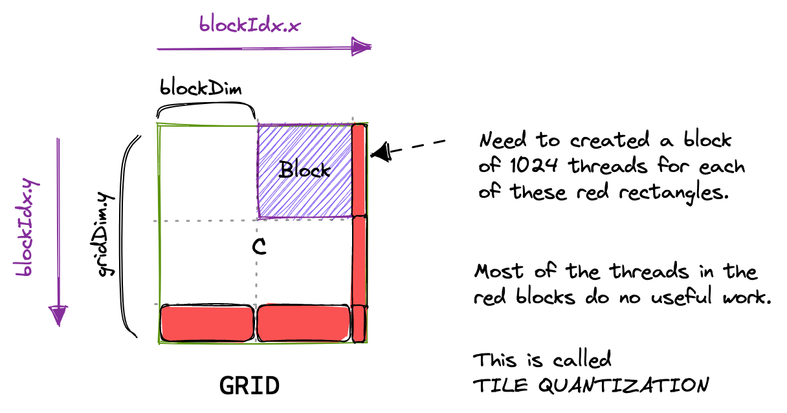
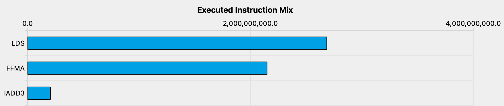
回到手上的 kernel，弄清楚它为什么这么慢。在同一个 block 里，ThreadId 分别为 (0,0) 和 (0,1) 的两个线程会加载 B 的同一列，但加载 A 的不同行。在最坏（零缓存）情况下，每个线程要从全局内存加载 2×4092+1 个 float。总共 4092² 个线程，这会产生 548GB 的内存流量。
下面是朴素 kernel 内存访问模式的可视化，以线程 A（红）和线程 B（绿）为例。
小结：这个 kernel 在 A6000 上乘两个 4092×4092 的 float32 矩阵时只能达到约 300 GFLOPs。考虑到 A6000 标称接近 30 TFLOPs，这相当糟糕（作为对比，300 GFLOPs 也大致是我早前 CPU 矩阵乘法文章里那颗 2015 年 Haswell CPU 上优化 BLAS 库的水平）。
怎么让它快起来？一个方向是优化 kernel 的内存访问模式，让全局内存访问能够被合并（coalesced）成更少的几次访问。
在讲全局内存合并之前，得先理解 warp 的概念。执行时，一个 block 里的线程被分组为所谓的 warp，每组 32 个线程。一个 warp 被分配给一个 warp scheduler（实际执行指令的物理核心）。
随后，拥有相邻 threadId 的线程成为同一个 warp 的一部分。同一个 warp 内、由这些线程发起的连续内存访问可以被归并成一次执行，这就是全局内存合并（global memory coalescing）。优化 kernel 的全局内存性能时，这是最重要的一点。
现实中 GPU 支持 32B、64B、128B 的内存访问。如果每个线程从全局内存加载一个 32 位 float，warp scheduler（大概是 MIO）就能把这 32×4B=128B 的加载合并成单次事务，前提是这些 float 在内存里是连续的。
回看上一个 kernel，我们给线程分配 C 的位置的方式，导致同一个 warp 的线程（那些 threadIdx.x 连续的）从内存里非连续地加载 A 的行。要启用合并，只需改变线程到 C 位置的映射方式。
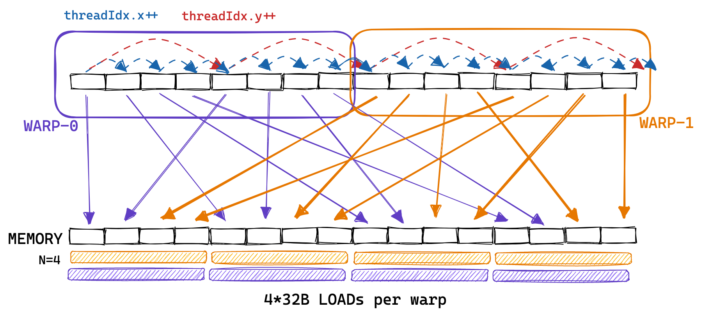
实现上只需改前两行：
调用方式也相应改变。有意思的是，启用全局内存合并并不会改变生成的汇编（见 Godbolt 上的 SASS 输出），因为访问合并是在 kernel 运行时由硬件完成的，这也合理：毕竟合并需要地址对齐，编译期无法保证。
全局内存合并把内存吞吐从 15GB/s 提升到 110GB/s，性能达到 2000 GFLOPs，相比第一个朴素 kernel 的 300 GFLOPs 是巨大的提升。下一个 kernel 我们将利用 GPU 片上高速内存，即共享内存，来缓存会被复用的数据。
除了庞大的全局内存，GPU 还有一块小得多、但物理上位于芯片上的内存区域，叫共享内存（SMEM），逻辑上每个 SM 独享一块。
由于共享内存位于片上，它的延迟远低于、带宽远高于全局内存（Ampere 架构没有好的公开基准，但 Volta 的论文测到全局内存带宽 750GiB/s、共享内存 12TiB/s）。
在这个 kernel 里，我们把 A 的一块和 B 的一块从全局内存加载进共享内存，然后尽量在两块数据上做尽可能多的工作，每个线程仍然负责 C 的一个位置。我们沿 A 的列、B 的行移动这些块，逐步累加部分结果。
这个 kernel 达到约 2200 GFLOPs，比上一版提升 50%。提升只有 50% 的部分原因是上一版已经有不错的 L1 缓存命中率。距离 GPU 标称的约 30 TFLOPs 还很远，从 roofline 图能明显看出来。
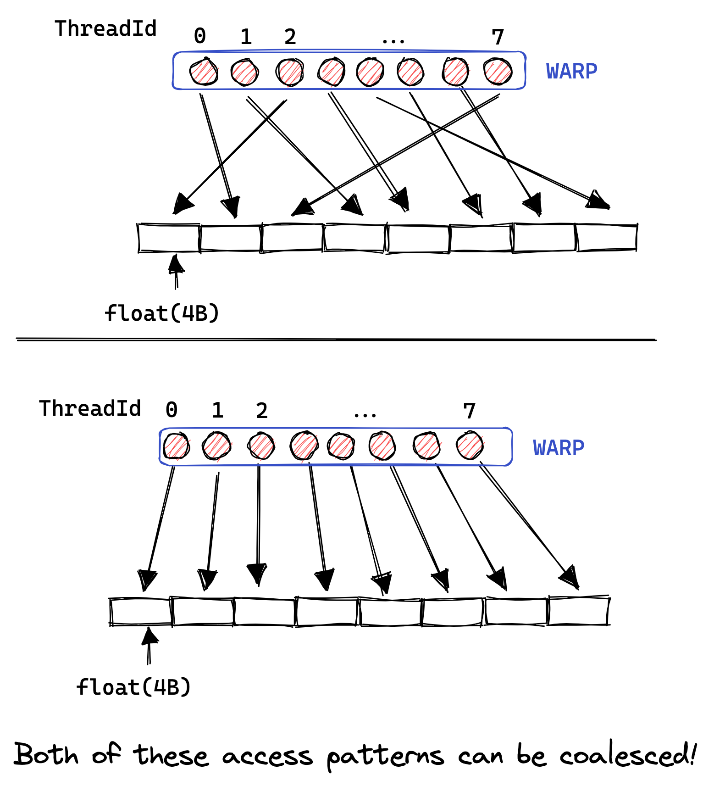
在 CHUNKSIZE=32 时，这会用掉 2×32×32×4B=8KB 的共享内存空间（也可以用 --ptxas-options=-v 编译得到：Used 37 registers, 8192 bytes smem）。我的 A6000 每个 block 最多可用 48KB 共享内存，所以还有空间。
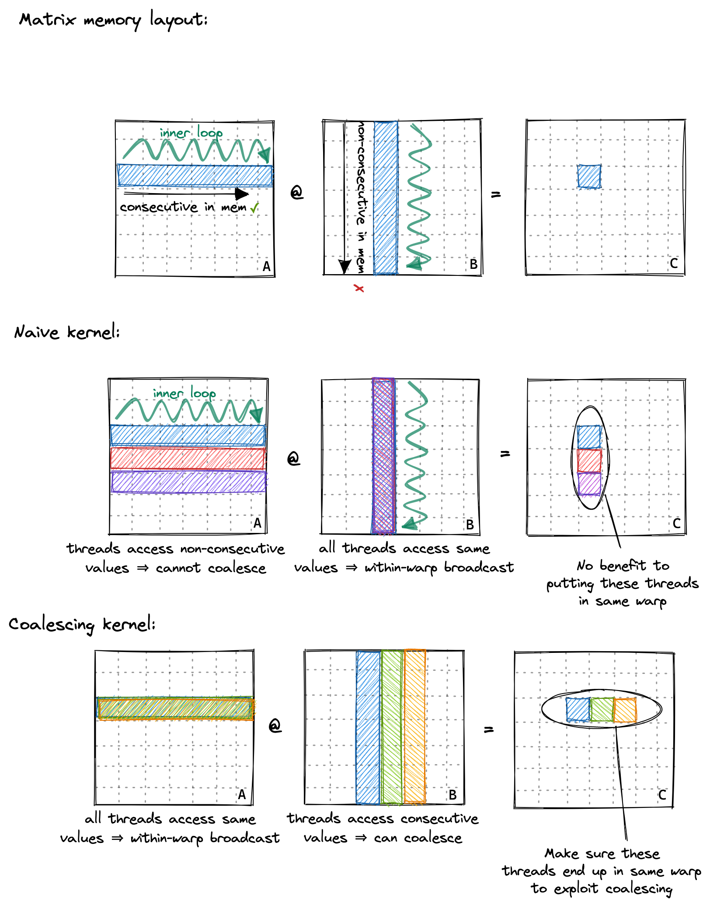
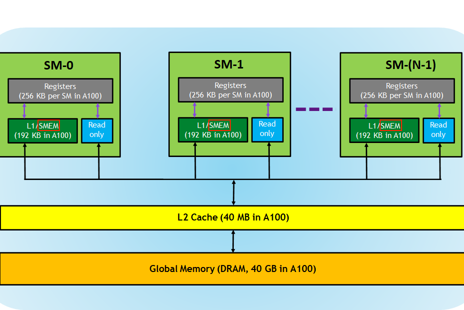
高占用率有用，因为它让我们用更大的「可发射指令池」去隐藏操作的高延迟。接着作者做了占用率计算：根据 cudaGetDeviceProperties 拿到的硬件参数，结合 kernel 的资源需求（共享内存、线程数、寄存器），算出本 kernel 受「每 block 线程数」和「每线程寄存器数」限制，每个 SM 只能放 1 个 block，最终占用率为 32 活跃 warp / 48 最大活跃 warp = 66%。
66% 的占用率不算差，所以这并不是 kernel 慢的原因。我们观察到 cuBLAS 能达到约 245 FLOPs/Byte 的算术强度，且无论算术强度极高还是极低，都不需要高占用率。
看 PTX 会发现内循环大量是 shared memory 的 load，而它本应是计算密集型 kernel。profiler 的 warp 状态采样证实了这一点：大量 cycle 耗在 Stall MIO Throttle，即 warp 在等 MIO（内存输入输出）指令队列不满，而这里 MIO 拥堵来源于共享内存指令。
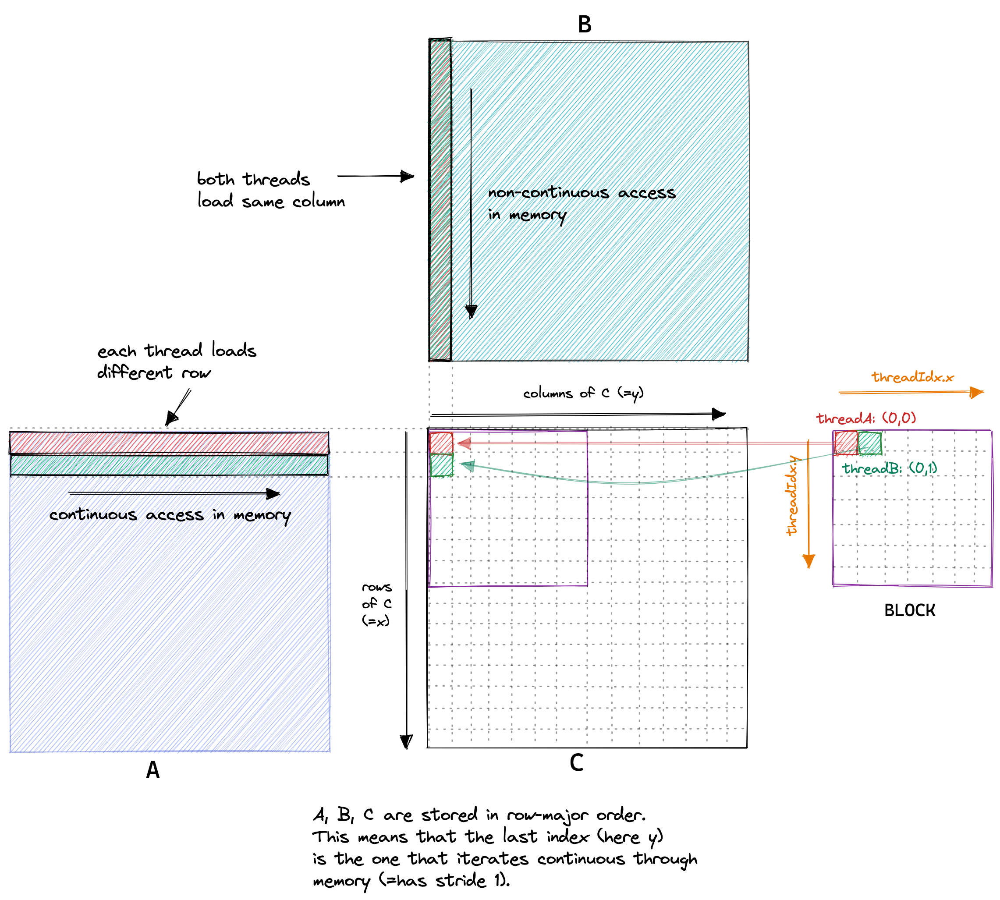
既然瓶颈在共享内存访问太多，那就让每个线程多算几个输出元素，从而摊薄每次结果所需的访存。新 kernel 在上一版基础上加了一层内循环，让每线程算 TM=8 个结果。SMEM 缓存大小为 BM×BK + BN×BK = 64×8 + 64×8 = 1024 个 float，每 block 共 4KB。
内循环是主要改动，从 GMEM 到 SMEM 的加载基本不变。这个 kernel 达到约 8600 GFLOPs，比上一版快 2.2 倍。
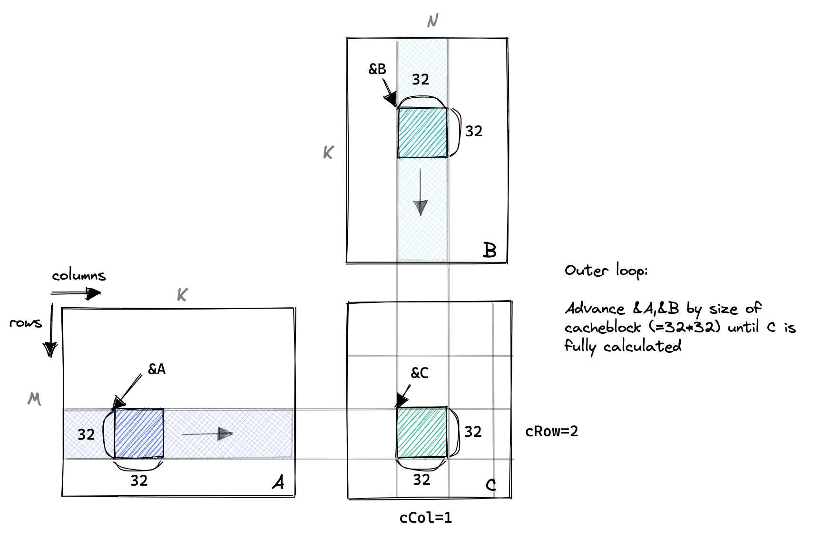
算一下每结果的访存：上一版每线程算 1 个结果时是 K/16 次 GMEM、K×2 次 SMEM；新版本每线程算 8 个结果降为 K/32 次 GMEM、K×9/8 次 SMEM。正如预期，因内存压力导致的停顿 cycle 大幅减少。
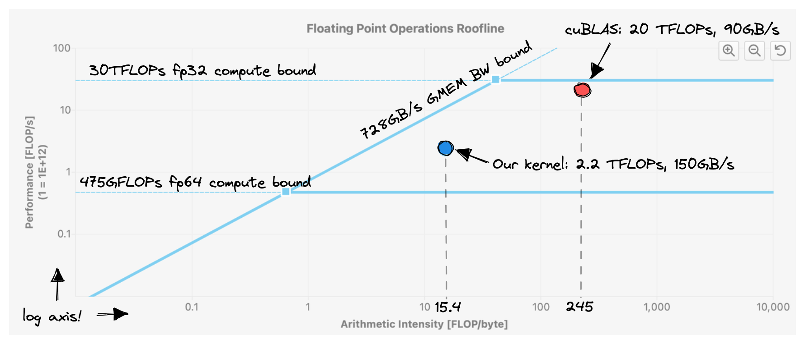
顺带一个编译器优化的观察：即便不手动把 B 缓存进寄存器、也不手动重排内循环，性能也没有下降。看汇编会发现编译器把两个循环都展开了，并消去了重复的 Bs 加载，最终 SMEM 访问次数和优化后的手写代码一样。当 PTX 编译成 SASS 时，Bs 的 SMEM 加载还被向量化了。这已经暗示了后面的一个优化方向：转置 As，让那些加载也能向量化。
Kernel 5 的基本思路是让每线程算一个 8×8 的 C 元素网格。第一阶段所有线程协作填充 SMEM 缓存，每个线程加载多个元素。填充完毕后，每线程把相关的 SMEM 项相乘、累加进本地寄存器。
内循环里，把 dotIdx 设为外层循环、把需要的值显式加载进寄存器，可以减少 SMEM 访问次数。
结果性能：16 TFLOPs，又翻了一倍。现在每线程算 TM×TN = 8×8 = 64 个结果。每结果访存降到 K/64 次 GMEM、K/4 次 SMEM。性能开始接近可接受的水平，但内存流水线拥堵造成的 warp 停顿仍然太频繁。
Kernel 6 将采取两项措施来改善：转置 As 以启用 SMEM 加载的自动向量化，以及向编译器承诺 GMEM 访问的对齐。
第一项优化是转置 As，这样就能用向量化的 SMEM 加载（SASS 里的 LDS.128）来读 As。看汇编会发现，原本是 32 位 LDS 加载的 As，现在也变成了 128 位的 LDS.128 加载，和 Bs 一样。这带来约 500 GFLOPs 的提升，约 3%。
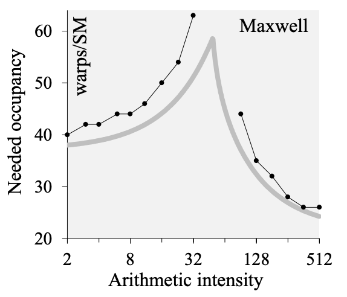
接着，用 float4 向量数据类型向量化所有对 GMEM 的加载和存储。在从 GMEM 搬入 SMEM 的过程中顺手转置 A：
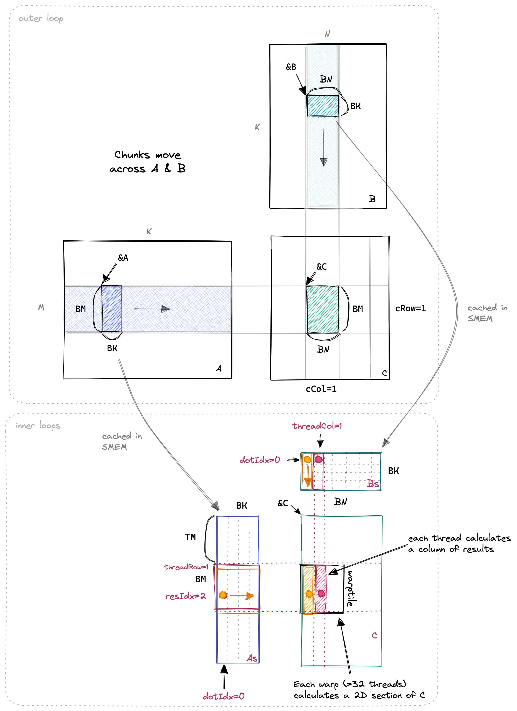
这让 32 位的 GMEM 加载指令（LDG.E、STG.E）被替换成 128 位的版本（LDG.E.128、STG.E.128）。作者起初困惑：为什么用 reinterpret_cast
Kernel 6 达到 19 TFLOPs。profiler 仍显示一些问题与优化空间：存在共享内存 bank conflict（cuBLAS 能避免）、占用率高于必要、还没有做双缓冲（CUTLASS 文档似乎强调了它）。但在处理这些之前，先摘几个低垂的果实：对 kernel 参数做自动调优（autotuning）。
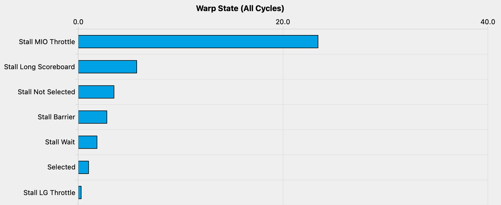
作者跳过了 Kernel 7、8，它们是为了搞清楚如何最好地消除共享内存 bank conflict 而写的，虽然消除了冲突但整体更慢，所以不在正文展开。
至此我们积累了五个模板参数：BM、BN、BK 决定从 GMEM 缓存进 SMEM 多少数据；TM、TN 决定从 SMEM 缓存进寄存器多少数据。
Kernel 6 用的是 BM=BN=128、BK=TM=TN=8。作者写了一个 bash 脚本遍历所有合理组合、benchmark 各自的运行时间。过程中要确保：知道哪些参数组合合理、跳过不合理的（例如想向量化所有 SMEM 加载，则 As 的大小 BM×BK 需能被 4×线程数整除）；约 400 组超参设置下 kernel 实现都正确。
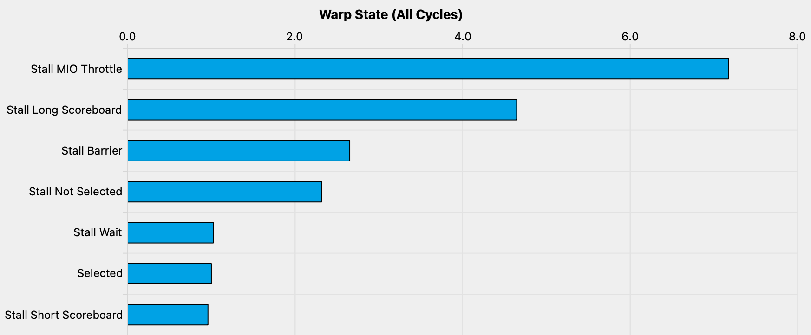
必要的代码改动花了不少时间来实现。结果证明最优参数随 GPU 型号变化很大。这也解释了为什么 Triton 这类编译器要提供 autotuning 例程，而 cuBLAS 大概维护着一张从 {GPU 类型, 矩阵尺寸, dtype, …} 到最优 GEMM 实现的预计算映射。
作者坦言无法解释为什么这些特定参数能产出最优性能。自动调优确实有效、每个高性能库都在用，但也让人不太满足。
目前的循环结构是 blocktiling 和 threadtiling 两层。现在我们在它们之间再加一层：warptiling。Warp 级分块起初有点绕，因为不像 block 和 thread，warp 不会显式出现在 CUDA 代码里。它是硬件特性，在 CUDA 代码中没有直接的对应物。
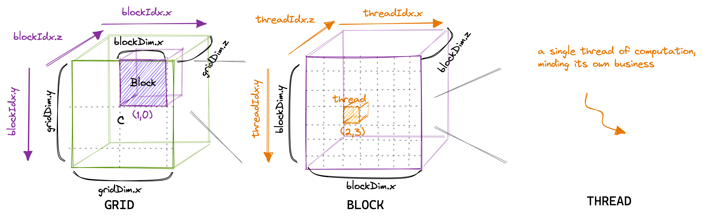
Warp 之所以和性能相关，原因有几条：warp 是被映射到 SM 内 warp scheduler 的调度单元（A6000 上每个 SM 有 4 个 warp scheduler）；共享内存 bank conflict 只发生在同一 warp 内的线程之间；近年的 GPU 上有寄存器缓存，更紧的 threadtiling 能带来更好的寄存器缓存局部性。
Warptiling 优雅之处在于它把全部层级的并行都显式化了：Blocktiling：不同 block 在不同 SM 上并行。Warptiling：不同 warp 在不同 warp scheduler 上并行、且能在同一 scheduler 上并发。Threadtiling：（极其有限的）指令级并行（ILP）。
作者把 dotIdx 循环移到更外层，因为这契合「先加载一些数据，然后对它做尽可能多的工作」的原则，也意味着 BK 循环内的所有计算彼此独立、可并行化（例如利用 ILP）。现在还可以开始预取下一轮迭代所需的数据，即双缓冲（double buffering）技术。
自动调优参数后，性能从 19.7 TFLOPs 提升到 A100 上的 21.7 TFLOPs。下面是 warptiling kernel 与 cuBLAS 在不同矩阵尺寸下的对比（图在 A100 上生成，所以绝对 FLOPs 数值不同）。
在 2048 和 4096 维度上，我们测得的 FLOPs 只比 cuBLAS 慢几个百分点。但在更小的矩阵上，我们比 NVIDIA 的库差得远！这是因为 cuBLAS 里装的不是「一个」SGEMM 实现，而是成百上千个。例如在维度 256 时它会调用两个 kernel：一个矩阵乘 kernel 跟着一个归约 kernel。Split-K 指的是把 K 维度切分到多个 threadblock，每个 block 只算 C 的一块，再由 cuBLAS 跟一个归约 kernel 把最终结果累加。
作者也报告了一个负结果：他额外实现了一个叫 thread swizzling 的优化，假设 threadblock 按 blockIdx 递增顺序启动、并优化 blockIdx 到 C 块的映射以提升 L2 局部性，结果并无收益。
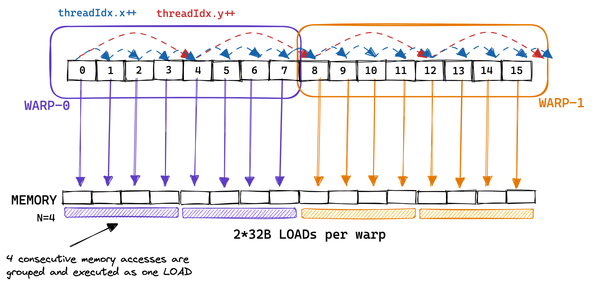
如果继续做下去，作者列了几个方向：双缓冲（更好地交错计算与内存加载，CUTLASS 在 GMEM⇒SMEM 和 SMEM⇒Registerfile 两层都做了）；Hopper 上引入的 warp specialization 新指令（让部分 warp 用更少寄存器，配合直接从 GMEM 加载到 SMEM 的特殊指令来降低寄存器压力）；消除 SMEM bank conflict（优化 SMEM 内的数据布局）；以及通过生成的 PTX 深入理解 Triton 里的 GEMM kernel。
写这篇帖子的体验和之前那篇 CPU 上优化 SGEMM 的文章相似：迭代式优化 SGEMM 是深度理解硬件性能特征最好的方式之一。让作者惊讶的是，用 CUDA 写出这些 kernel 的代码竟然如此容易。
还有一点：幂律无处不在。他花了两个周末写前 6 个 kernel、达到峰值 FLOPs 的 80%，又花了 4 个周末做 autotuning 和 warptiling 才到 94%。边写代码边学到的东西也在递减，所以他把继续追性能的事往后推了。
参考：https://siboehm.com/articles/22/CUDA-MMM